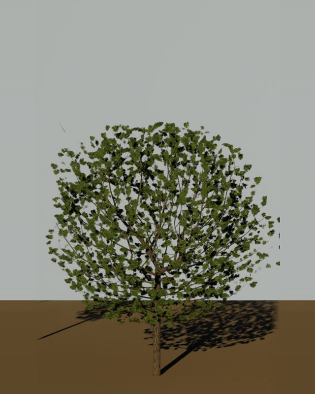
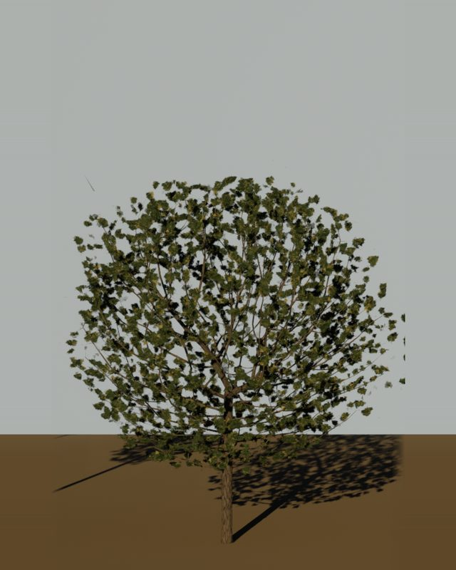
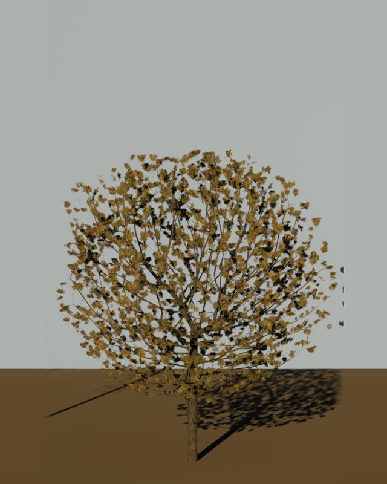
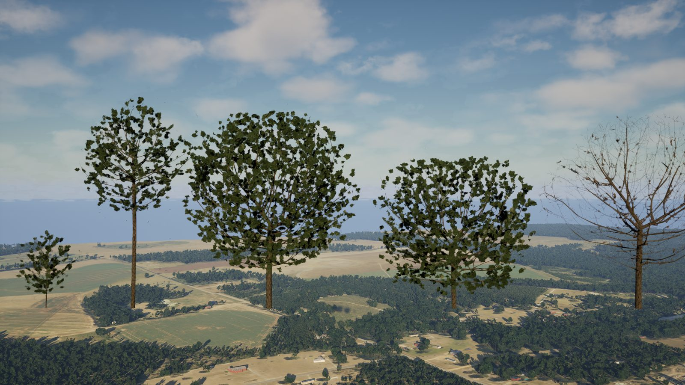
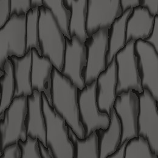

Trees · spec sheet
Water oak
Quercus nigra · Spoon-shaped leaves; holds them into winter, dropping until spring.
In films
5.1%Georgia basal area
1.2%North Carolina basal area
0.1%Western NC basal area





Leaf
Bark

Palette
SummerFall 1Fall 2Fall 3Fall 4
Season calendar
The leaf colour and cover the season engine draws on each day; ticks mark leaf-out, the start of the turn and of the drop.
Facts
- Leaf
- spoon · 8 cm · alternate
- Leaves a spray
- 40-56
- Leaf out
- Mar 26
- Turns
- Dec 11, over 80 days
- Drops
- Nov 26, over 120 days
- Bark preset
- oak
- Built
- 12 trees
- Sprays a tree
- 4,061 (median)
- Limb triangles
- 48,574 (median)
- FIA code
- 827
Forms
| Form | What | Height m | DBH cm | Crown base | Crown radius m | Crown envelope |
|---|---|---|---|---|---|---|
| Y | young, old field | 8.0 | 12 | 18% | 2.6 | ovoid |
| F | forest tree | 22.0 | 40 | 45% | 5.0 | ovoid |
| M | yard tree, round and dense | 20.0 | 60 | 20% | 8.5 | round |
| O | fencerow, open-grown | 15.0 | 50 | 14% | 8.0 | spread |